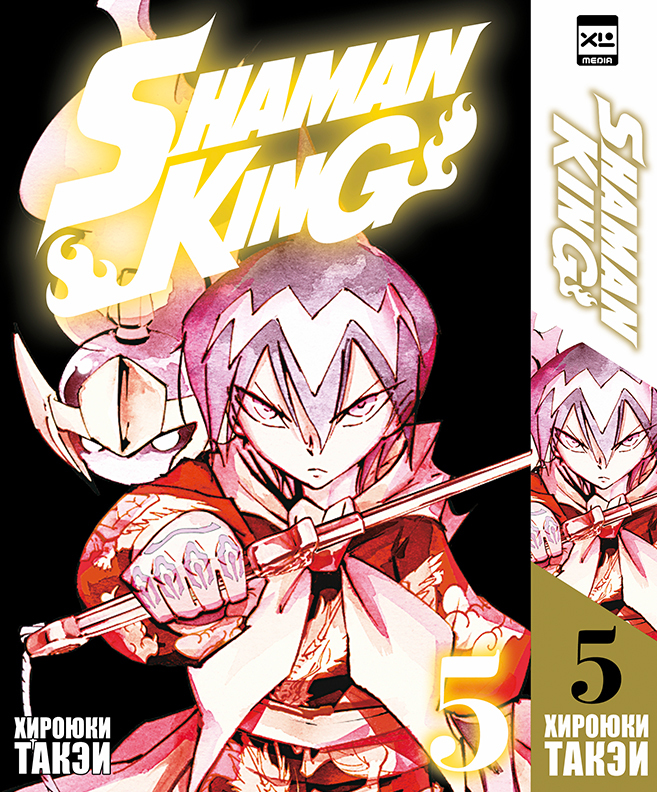
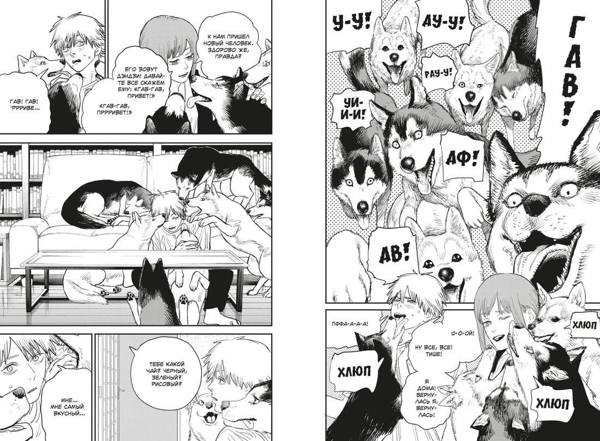
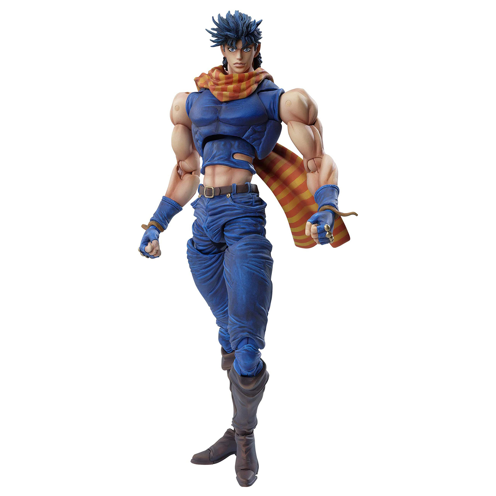
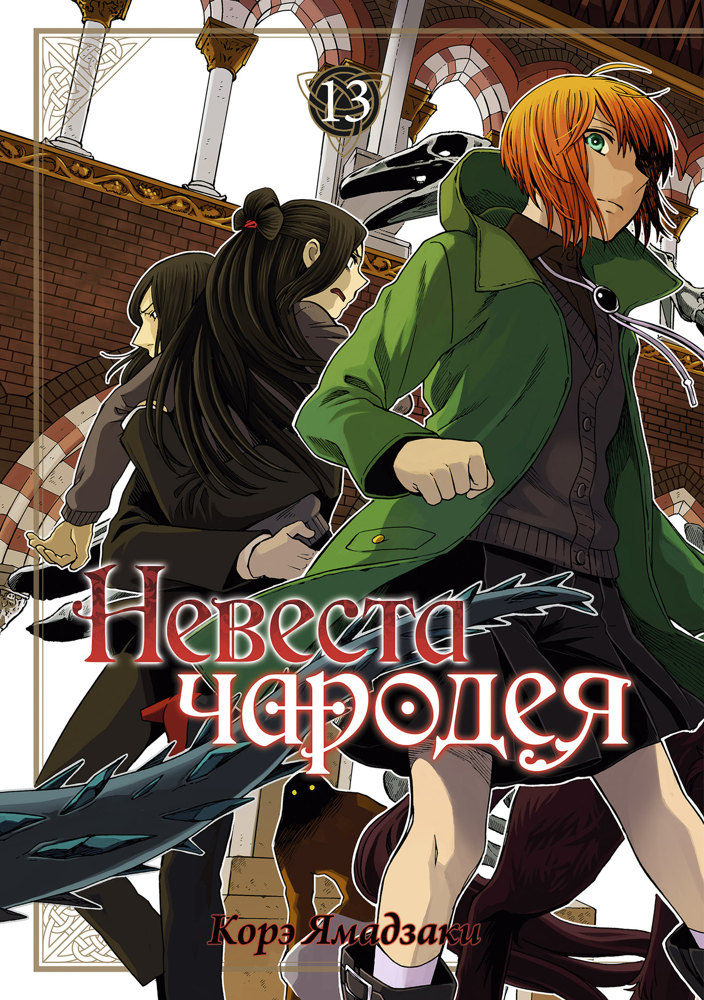

| Название | Изображение | Описание | Цена |
|---|---|---|---|
Король шаманов. Том 5 |  | Битва шаманов началась, и судьба всего мира будет зависеть от того, в чьих руках окажется Король духов. Здесь с каждым часом все опаснее — грядут новое время и новый порядок! | 790 руб |
Человек-бензопила. Книга 5. Купание в ванне. Чувства собаки |  | В жизни сотрудников специального четвертого отдела наступает затишье: Дэндзи, Пауэр и Аки Хаякава восстанавливают силы после тяжелой битвы с наемными убийцами и Санта-Клаусом. И за это время Аки еще сильнее сближается со своими взбалмошными коллегами… Однако на горизонте уже маячит новая миссия — масштабная операция по уничтожению демона — огнестрельное оружие, на которую Бюро общественной безопасности собирается бросить свои лучшие силы. | 910 руб |
Фигурка Medicos JoJo's Bizarre Adventure Chozo Kado |  | Джозеф Джостар — протагонист Боевого стремления, один из главных героев Крестоносцев звёздной пыли и второстепенный персонаж Несокрушимого алмаза. Джозеф - второй ДжоДжо, представленный в серии Невероятные приключения ДжоДжо. | 12 790 руб |
Невеста чародея. Том 13 |  | Секреты есть у каждого. И у Тисэ, и у Зои Айви. Чтобы защитить тайну, невольные свидетели заключили магический «уговор». Всех пятерых соединили узы клятвы. Если между студентами возникают новые союзы, то их дома не готовы расстаться с оковами прошлого… | 590 руб |